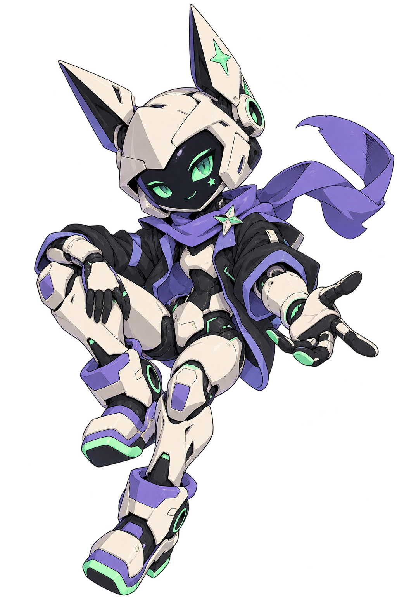

01 / GET THE GIST
Skip the scroll marathon.
Summarize recent readable messages, decisions and open questions. Pull out tasks without inventing who owns them.
extract action items from this channelYour Discord crew. One useful sidekick.
Catch the gist. Get a plan moving. Pick game night. AsterByte turns a sentence in Discord into a helpful next step.
Mention it. Reply to it. Use your server's prefix.
Supported actions only. Your permissions stay in charge.

01 / Pick a mission
Choose something you actually need. Copy the prompt into a beta server where the bot is installed, then select the real bot mention.
Interactive illustration, not a live bot. Nothing is sent to AI.
02 / Useful enough to come back to
01 / GET THE GIST
Summarize recent readable messages, decisions and open questions. Pull out tasks without inventing who owns them.
extract action items from this channel02 / MAKE IT REPEATABLE
Save a personal workflow for support triage, event plans or study notes. Run it again on new text or channel history.
save workflow triage: Group this report into bugs, impact, and next steps.03 / YOU HOLD THE KEYS
Supported server changes need your Discord permission and confirmation. Access is checked again before execution.
create a channel called roadmap04 / SOME ROOM FOR PLAY
Polls, trivia, dice and a daily conversation spark. Only when asked. No streak pressure or surprise engagement pings.
poll: Friday game? | Chess | MinecraftPersonality, with a purpose
Curious, lightly playful, practical first. No pretending to be human. No fake “done!” messages. Serious answers when it matters.
03 / First five minutes
Say @AsterByte starter pack for a compact mission menu. A manager can enable channels through /setup.
Catch up or run a poll. Exact local games and help don't need AI quota. Ask “show my quota” to see your limits.
Save a workflow you repeat. Managers can try time-limited, visible scheduled digests while Server Pro beta is active.
04 / Your account. Your limits.
The beta has a limited shared Groq account. Personal Groq and OpenRouter keys use encrypted storage, belong to your Discord user, and never silently fall back to the shared account on failure.
Not open self-service yet: private connection setup currently works only for the operator on the bot's Mac. Public HTTPS onboarding is still a release gate. Consumer chat subscriptions aren't API access.
Per-user quotas, server pools and concurrency caps apply. BYOK reduces our model cost; it doesn't make requests unlimited or hosting free.
Accounts, quotas & privacy ↗Before you invite your whole crew
No. You need the matching Discord permission, the bot needs its own permission, and role hierarchy still applies. Only supported actions run after requester confirmation.
No. Invocations use bounded accessible context. Manager-enabled digests post a visible notice, run periodically and expire after 30 days. They are not continuous autonomous monitoring.
The invite-only beta has no payments. Free access is capped. Server Pro is currently a beta entitlement, not a purchasable subscription. Pricing and paid launch depend on reliable hosting, onboarding and eligibility.
Not yet. The current host is the operator's Mac, which must stay awake and online. Reminders can be delayed while offline. There is no uptime guarantee.
One mention. A useful next step.
@AsterByte starter packInvite-only beta. No checkout. Explore what works today before planning a wider rollout.
Open the field guide ↗Use the support tracker for beta questions or privacy requests. Never include tokens, keys or private chat. See security guidance before reporting a vulnerability.